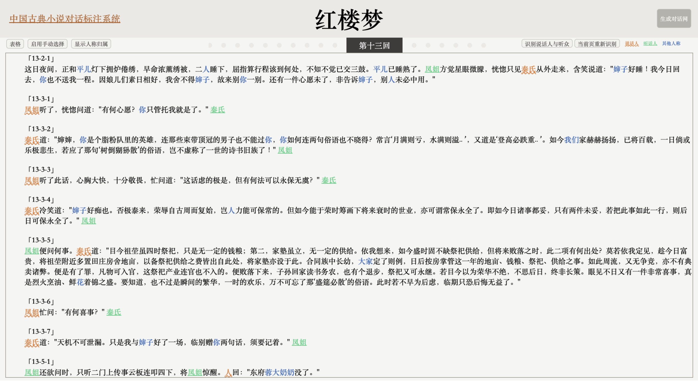
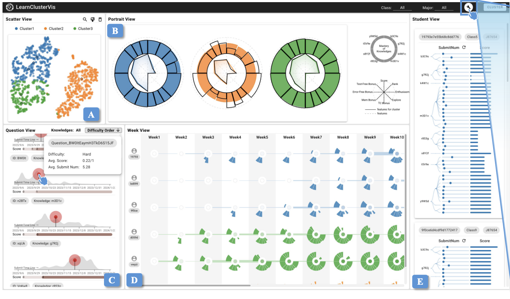
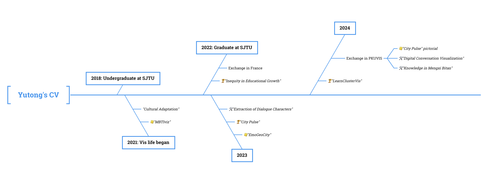

Now, I am working at SWAC, OECD as a data analyst intern, supervised by Inhoi Heo.
My research interests lie at the intersection of data visualization, humanities and social sciences.
I’m passionate about using technology and creativity to delve into the humanities, and reflecting on the technology itself.
It’s a pursuit fueled by a deep sense of empathy and a commitment to fairness.
For me, an ideal work, even if it's a small force, should be truly valuable in enhancing mutual understanding and inclusivity among diverse individuals or societal groups.
This might involve exploring individual differences impacting communication, revealing diverse life situations and perceptions,
uncovering and presenting inequities, or advancing universal access to knowledge.
Additionally,
I’m fascinated with the potential power of AI and look forward to exploring how human imagination can collaborate with it.
I enjoy reading, thinking, creating and also chatting with GPT. ☺️
Interest Tags —
Interdiscipline, Data Humanism, Data Art, Subjectivity in Data Visualization, Affective Visualization Design, Visual Representation for Human, Social Science, Ethics, Reflections on InfoVis, Digital Humanities
News
🌱 [07/2025] Affective GeoVisualization Design is accepted by IEEE VIS 2025.
🌱 [07/2025] Octopus Maps Design is accepted by IEEE VIS 2025.
🍀 [05/2025] Start working at OECD/SWAC.
🌱 [03/2025] City Pulse is longlisted in the Information is Beautiful Awards 2024.
🌱 [03/2025] LearnClusterVis is accepted by EuroVis 2025 Education Papers track.
🌱 [03/2025] Dialogue Character Extraction and Attribution in Classic Chinese Novels is accepted by DH2025.
🌱 [08/2024] City Pulse is accepted by IEEE VIS 2024 Arts Program as a pictorial!
🌱 [07/2024] LearnClusterVis wins first prize in ChinaVis 2024 Visual Analytics Challenge.
🌱 [06/2024] City Pulse is to be exhibited in China VISAP'24.
🌱 [04/2024] City Pulse is shortlisted in Visual Data Storytelling contest, PacificVis 2024.
🌱 [01/2024] EmoGeoCity is accepted by PacificVis 2024.
Research
Vis Survey"Mapping What I Feel": Understanding Affective Geovisualization Design Through the Lens of People-Place Relationships
Xingyu Lan*, Yutong Yang*, Yifan Wang
IEEE VIS 2025
We analyzed a corpus of 62 affective geovisualization designs and constructed a taxonomy that characterizes their design features by referring to the PPP model from humanistic geography.
[Paper][PPT][Website]
Data ArtCity Pulse: Revealing City Identity Through Abstraction of Metro Lines
Xinyue Chen, Yixuan Zhang, Yutong Yang, Jing Chen, Xiaoru Yuan, Weiping Chen, Rebecca Ruige Xu
IEEE VIS 2024 Arts Program; IEEE PacificVis 2024 Visual Data Storytelling Contest; China VISAP'24.
We reveal the region characteristics and tell the story about the development of metro by abstracting the city as a square, the metro route as a line, and using the width of the
lines to represent the coverage of the routes.
[System][Video][Paper][Gallery]
Vis ApplicationEmoGeoCity: Interactive Visual Exploration of City’s Historical and Cultural Evolution Based on Emotional Geography
EmoGeoCity is a digital humanities visual analytics system to study a city's cultural and historical evolution, connecting multidimensional data with emotion.
[Paper]
Vis SurveyUnveiling the Visual Rhetoric of Persuasive Cartography: A Case Study of the Design of Octopus Maps
Daocheng Lin, Yifan Wang, Yutong Yang, Xingyu Lan
IEEE VIS 2025
We collected a corpus of 90 octopus maps from various online sources.
Then, drawing upon the rhetorical schema, we investigated the visual rhetoric of these maps in detail
and summarized a design space.
[Paper][Website]

Vis ApplicationLeveraging Human Expertise for LLM-Assisted Dialogue Character Extraction and Attribution in Classic Chinese Novel
In this work, we propose a framework for extracting, annotating, attributing and visualizing dialogue characters in classic Chinese novels. We leverage interactive workflows to incorporate expert’s knowledge in the dialogue character extraction and attribution process.
[PPT]
Vis ApplicationMBTIviz: A Visualization System for Research on Psycho-Demographics and Personality
Yutong Yang, Xiaoju Dong, Xuefei Tian, Yanling Zhang, Meng Zhou
International Conference of Pioneering Computer Scientists, Engineers and Educators, 2023.
MBTIviz is a system that visualizes the relationship between personality and demographic factors.
It’s used in the study to calculate the distribution of age, gender, and occupation for each personality type,
and explore the correlation between personality, occupation, and nationality.
[Paper]

Vis ApplicationLearnClusterVis: A Framework for Clustering-driven Visual Analysis of Programming Learners' Learning Process
We introduce LearnClusterVis, a clustering-driven visual analysis framework designed to uncover behavioral patterns and developmental trajectories in programming learners' activities
[Paper]
Social Science成长背景对教育获得的影响——以上海地区80后群体为例 (The Influence of Growth Background on Educational Attainment - An Example of Post-80s Group in Shanghai)
We investigated the impact of the growth background (including personal characteristics, region and family background)
of the post-80s generation in Shanghai on educational attainment from the perspective of cultural reproduction, based on the “Shanghai Baseline Survey Data (FYRST2013)”.
[Poster][Description]
Investigated and analyzed cultural adaptation among French teachers in a Chinese university through quantitative methods, identifying significant correlations with factors like living environment and teaching adaptation.
Conducted semi-structured interviews with six French teachers from various backgrounds to explore specific challenges and solutions.
Social Practice: Inequity in the Spatial Distribution of Male and Female Public Restrooms, 2019
Observed the issue of women spending more time queuing for restrooms than men and planed and implemented a social practice.
Conducted on-site interviews with the managers of public restrooms at renowned Shanghai landmarks such as People's Square, Jing'an Temple, and Yu Garden.
More specifically, my interest lies at the intersection of two aspects: humanism and creativity.
Along with my accumulated skills in visualization and data analysis, as well as my strengths in empathy, problem sensitivity,
and critical thinking, they guide my path toward achieving my goals.
- HUMANITY -
In the aspect of humanism, the original intention is to be understood,
and this kind of understanding extends to a wider range of the groups that I belong or empathize with.
I’m always looking for an expression that breaks down the barriers of difference and allows for empathy between different people.
For example, the group of people encompassing empathy, the idealists, the females, the minorities…
Because differences of background, situation, characteristic like gender, perception, etc. lead to different choices of being.
I thus want to speak aloud to let more people know what different kinds of groups are perceiving and give us all understanding and support,
rather than criticize and marginalize the “abnormal” choices made.
And understanding between the different us lies in a way, whether technical or humanistic, of true empathy.
Thus, any effort related to revealing social conditions, advocating for the rights of marginalized groups,
promoting equity and diversity, and fostering mutual understanding and inclusivity fills me with great meaning and enthusiasm.
In the aspect of creativity,
the journey of exploring visualization itself is exciting.
I enjoy thinking out of the box and bringing the creativities into useful ideas. And I like using basic shapes to form novel designs.
From another perspective, as Iris Murdoch said, art and morals are one, sharing the same essence: love.
It embraces the power of humanistic care and inherently aims to break down walls of incomprehension.
It transcends the self, representing the broadest realm of human insight.
The act of expressing emotions, perceptions, dreams, and more through the medium of art, transcending the barriers of limited words can profoundly touch me.
- TECHNOLOGY -
I’ve grappled with the tug-of-war between reality and ideals since childhood.
I chose to learn more about technology during my growth process, bridging the gap to reality and acquiring the ability to implement my ideas.
My research experience in the field of visualization
has empowered me with the ability to narrow down the broadly perceived problems and enhance my analytical skills.
At the same time, I’ve been actively enhancing my abilities in social analysis
as I persistently seek solutions for presenting and addressing the circumstances faced by minority and vulnerable groups,
while advocating for a more equitable and inclusive society.
- INTERDISCIPLINARITY -
In light of all above, I find myself at the intersection of multiple disciplines.

EDUCATION
Shanghai Jiao Tong UniversityShanghai, China
Master of Engineering in Electronic Information[Expected]Sep. 2022 – Mar. 2026
Shanghai Jiao Tong UniversityShanghai, China
Bachelor of French, Minor in Information Engineering Sep. 2018 – June 2022
RESEARCH EXPERIENCE
Data Intelligence Visual Analytics Team, Shanghai Jiao Tong University
Holistic Study of Nanjing’s History and Culture through Digital HumanitiesApr. 2023 – Feb. 2024
Proposed EmoGeoCity, a visual analytics system for emotional geography-based city evolution study.
Incorporated literary works into visual analytics for studying the history of cities.
Leveraged emotion to connect multiple dimensions in cultural historical data, incorporating sentiment analysis for quantifying works' emotional content and synthesizing overall emotional trends within specific contexts.
Inequity in Educational Growth: A Study on Post-80s ShanghaiNov. 2022 -- Nov. 2023
Conducted regression analysis to identify regional and family background as significant correlation coefficients in educational attainment, explored their impacts,
and proposed recommendations based on a qualitative analysis.
MBTIviz: Visual Analysis of the Correlation Between Personality Traits and DemographicsJan. 2022 -- June 2022
Designed a comprehensive demographic data view which integrates all demographic information.
Proposed utilizing parallel coordinate and heatmap for correlation analysis in lieu of conventional data tables.
Calculated demographic percentages for each traits and analyzed correlations with occupation and nationality.
PKU Visualization and Visual Analytics Group, Peking University
City Pulse: Global Metro Line Development HistoryJuly 2023 -- Jan. 2024
Proposed the design idea of abstracting the city as a square, the metro route as a line, and using the width of the lines to represent the coverage of the routes.
Developed the system of Global Metro Line Development History.
Extraction of Dialogue Characters in Ming and Qing NovelsFeb. 2023 -- Present
Automatic identification: utilized rule-based, deep learning, and GPT to extract speakers and listeners.
User interaction: designed and implemented a dialogue annotation system for manually editing extracted errors.
PUBLICATIONS
[1] Y. Yang, Y. Liu, Q. Bai, T. Zhou, Z. Ye and X. Dong, “EmoGeoCity: Interactive Visual Exploration of City’s
Historical and Cultural Evolution Based on Emotional Geography,” in IEEE 17th Pacific Visualization Symposium
(PacificVis), 2024
[2] X. Chen, Y. Zhang, Y. Yang, J. Chen, R. Xu, W. Chan and X. Yuan,
“City Pulse: Revealing City Identity Through Abstraction of Metro Lines,” IEEE VISAP, 2024. (Accepted)
[3] Y. Yang, X. Dong, X. Tian, Y. Zhang and M. Zhou. “MBTIviz: A Visualization System for Research on
Psycho-Demographics and Personality,” in ICPCSEE 2023, Data Science pp 259–276.
[4] Y. Yang, Y. Liu, S. Han, Y. Chang, Y. Gong, Y. Zhao and X. Dong. “The Influence of Growth Background on Educational Attainment - An Example of Post-80s Group in Shanghai,” ChinaVis 2023 Poster.
AWARDS
City Pulse: Global Metro Line Development History
Shortlisted in Visual Data Storytelling contest, PacificVis 2024.
Inequity in Educational Growth: A Study on Post-80s Shanghai
First prize in the Huiyuan national data analysis competition 2022(¥10000).
LearnClusterVis
First prize in ChinaVis 2024 Visual Analytics Challenge.
Inequity in the Spatial Distribution of Male and Female Public Restroom
Advanced Social Practice Individual, Shanghai Jiao Tong University, 2019.
PROJECTS
Undergraduate thesis: Research on the cultural adaptation of foreign teachers in Chinese universities
Investigated and analyzed cultural adaptation among French teachers in a Chinese university through quantitative methods, identifying significant correlations with factors like living environment and teaching adaptation.
Conducted semi-structured interviews with six French teachers from various backgrounds.
Social Practice: Inequity in the Spatial Distribution of Male and Female Public Restrooms
Observed the gender disparity in restroom queuing times and implemented a social practice.
Conducted on-site interviews with the managers of public restrooms at renowned Shanghai landmarks.
INTERNSHIP EXPERIENCE
Chu Chen Books 楚尘文化Beijing, China
Editor, Editorial department2024
IVORY·白Shanghai, China
Assistant photographer and new media operations, Marketing department2021
(Under Construction 🏗️) Here, by reflecting on what situation I was in and the relevant choice I have made,
I draw a life situation line which depicts my life points that inspired me or changed me.
If you are insterested in how your own life line has been led to present, you can write your own data in "medata" in the file me.js.
Some interesting courses I have taken or audited
French Philosophy Information Design Phenomenology A Spiritual Odyssey of the West Interactive Design Epistemology
Student Work
I worked at the Art Center of the Student Union at Shanghai Jiao Tong University. I mainly worked in photography, videography, and interviewing.
I never stop thinking and try to find more academic intersections related to my major and my interests.
That’s partly the reason that I audited the courses.
I was excited to find every philosophy course inspiring and restructured my raw thinkings.
Existentialism and Digital Humanities
Encountering existentialism is a turning point for me.
At that point I was lost but facing a forking path where I had to make a choice about my research direction.
I realized I needed to make choices within the limited freedom of my circumstances to correct my course.
With only a bit of courage, and a vague preference for humanities,
I suggested to my supervisor that I would like to try digital humanities.
That would be the start point of my academic journey in the humanities, also my path of self discovery and expression.
Artificial Intelligence and Consciousness
I particularly remember a lesson talked about the mind-brain identity theory.
I’ve already thought about whether there are cognition and emotion barriers between AI and human.
And I found in that lesson that the computationalism can potentially break the barriers between the two.
However, I believe there’s an unbridgeable gap between AI and human due to AI being a product of modern science while human consciousness has a metaphysical aspect.
In short, for me, the difference lies in the explanatory gap.
I haven’t thought through on that point but it interests me as always.
Generative Art, Creativity and Expression
I've been exposed to more knowledge about generative art during the Interactive Design course.
I have long looked forward to exploring how AI can collaborate with human imagination and help us with self-expression,
for I believe the essence of art lies in its ability of expression, whose threshold is lowered by generative art.
Some words resonate with me
💞 Humanism 🦋 Inclusion 🎨 Creativity 🌈 Diversity 🔦 Existentialism
Personal Interests 🌍 travel 📷 photography 📖 reading 💭 thinking 🎵 music